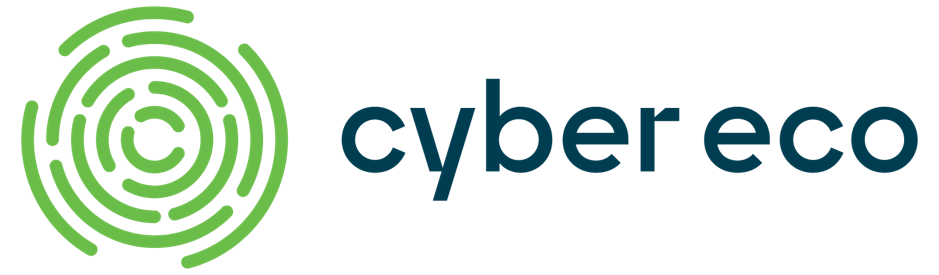

Par la mise en commun de ressources spécialisées, Cybereco se propose de faire du Québec un collectif de talent
et d’expertise en cybersécurité de calibre mondial. Travaillant sur des solutions concrètes destinées à ce domaine
en forte croissance, Cybereco favorise le partage de connaissances et la formation de la relève, mais aussi la
sensibilisation et la prévention, en plus d’offrir des produits et services spécialisés en cybersécurité.
Pour en savoir plus sur CyberEco :

Le Mouvement des caisses Desjardins est le plus grand groupe financier coopératif au Canada.
Il regroupe un réseau de caisses, de centres Desjardins Entreprises et de centres Service Signature,
de même qu'une vingtaine de composantes, notamment en assurance de personnes et de dommages,
en valeurs mobilières, en capital de risque et en gestion d'actifs.
Desjardins recrute régulièrement pour des emplois et des stages. Pour postuler, visitez ce lien.
Desjardins recrute régulièrement pour des emplois et des stages. Pour postuler, visitez ce lien.
Pour en savoir plus sur Desjardins :
Maltem Canada est installé à Montréal depuis 2018 et connaît un essor fulgurant avec plus d’une quarantaine de
collaborateurs, prêts à accompagner leurs clients dans des défis de transformation numérique. S’inscrivant dans
une logique d’innovation, Maltem Canada offre des services de consultations technologiques dans plusieurs
domaines tels que le développement applicatif, l’accompagnement agile, big data, l’expérience utilisateur et la
cyber sécurité.
Pour en savoir plus sur Maltem :
Fondée en 1873, Polytechnique Montréal, université d'ingénierie, est l’une des plus
importantes universités d’enseignement et de recherche en génie au Canada. Polytechnique Montréal est située
sur le campus de l’Université de Montréal, le plus grand complexe universitaire francophone en Amérique. Avec
plus de 52 500 diplômés, Polytechnique a formé 22 % des ingénieurs en exercice membres de l’Ordre des
ingénieurs du Québec (OIQ). Elle propose plus de 120 programmes de formation. Polytechnique compte 285
professeurs et plus de 9 000 étudiantes et étudiants. Son budget annuel global s’élève à 255 millions de dollars,
incluant un budget de recherche de près de 100 millions de dollars.
Pour en savoir plus sur Polytechnique Montréal :
PolyHx est un rassemblement de divers comités informatiques de
Polytechnique Montréal, créé dans le but de faciliter l’implication
technique dans le domaine. Le comité est voué au développement de
systèmes informatiques et logiciels et à la promotion de différentes
pratiques par le biais de compétitions. De plus, la société technique
s’investit dans les sphères de l’intelligence artificielle et de la
sécurité informatique. D’ailleurs, le comité organise des ateliers,
des conférences et différents événements en plus de participer à
plusieurs compétitions tout au long de l’année.
Pour en savoir plus sur PolyHx :
Yogosha (partenaire BUG BOUNTY de Maltem Canada) est une plateforme de cybersécurité pour les RSSIs
souhaitant mieux sécuriser leurs applications en allant au-delà des approches traditionnelles. La plateforme
repose sur une communauté de hackers d’élite certifiés pour la détection et la gestion des vulnérabilités, en
proposant des services de Bug Bounty, Pentests crowdsourcés et CVD. Yogosha ne sélectionne que les hackers les
plus talentueux afin de s’assurer que les vulnérabilités les plus critiques sont identifiées rapidement et plus
facilement corrigées. Yogosha permet à ses clients de développer des applications à l’épreuve des attaques, de
réduire les risques, d’augmenter la compliance et d’accélérer le business.
Pour en savoir plus sur Yogosha :